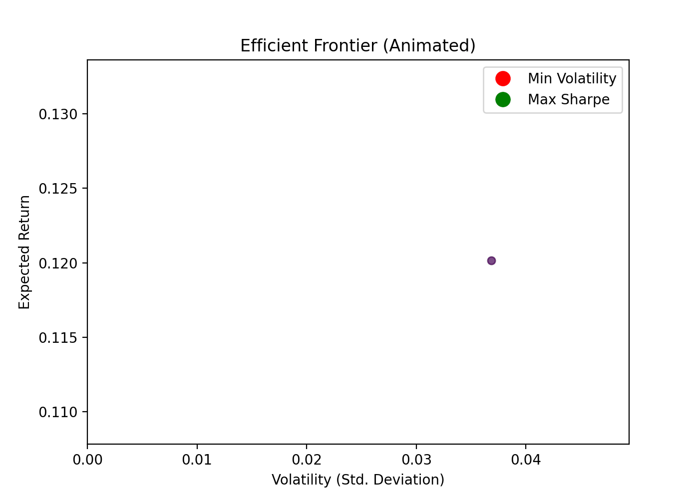

Overview
This project explores advanced portfolio optimization techniques from Modern Portfolio Theory (MPT) to Sharpe ratio maximization and extensions like the Black-Litterman model. It demonstrates numerical solutions to constructing efficient portfolios using historical or simulated return data.
Theoretical Framework
1. Mean-Variance Optimization
The classical formulation introduced by Markowitz seeks to minimize portfolio variance for a given expected return \( R \):
Where:
- \( w \): portfolio weights
- \( \mu \): expected return vector
- \( \Sigma \): covariance matrix of returns
2. Sharpe Ratio Maximization
This maximizes excess return per unit of risk. \( r_f \) is the risk-free rate (often set to 0 in simulations).
Python Implementation: Efficient Frontier Simulation
import numpy as np
import matplotlib.pyplot as plt
np.random.seed(42)
n_assets = 5
n_portfolios = 5000
trading_days = 252
# Simulate realistic log returns
mu = np.array([0.08, 0.10, 0.12, 0.09, 0.11])
sigma = np.array([0.15, 0.20, 0.25, 0.18, 0.22])
corr_matrix = np.array([
[1.0, 0.2, 0.4, 0.1, 0.3],
[0.2, 1.0, 0.3, 0.2, 0.4],
[0.4, 0.3, 1.0, 0.5, 0.2],
[0.1, 0.2, 0.5, 1.0, 0.3],
[0.3, 0.4, 0.2, 0.3, 1.0]
])
cov_matrix = np.outer(sigma, sigma) * corr_matrix
results = np.zeros((3, n_portfolios))
weights_record = []
for i in range(n_portfolios):
weights = np.random.dirichlet(np.ones(n_assets))
ret = np.dot(weights, mu)
vol = np.sqrt(np.dot(weights.T, np.dot(cov_matrix, weights)))
sharpe = ret / vol
results[0, i] = vol
results[1, i] = ret
results[2, i] = sharpe
weights_record.append(weights)
# Plotting
plt.figure(figsize=(10, 6))
plt.scatter(results[0], results[1], c=results[2], cmap='viridis', s=10)
plt.xlabel('Annualized Volatility')
plt.ylabel('Annualized Return')
plt.title('Simulated Efficient Frontier')
plt.colorbar(label='Sharpe Ratio')
plt.grid(True)
plt.tight_layout()
plt.show()
How to Run
# Save as optimize.py
pip install numpy matplotlib
python optimize.py
Advanced Extensions
Black-Litterman Model: Combines market equilibrium with investor views to adjust expected returns, improving robustness and stability of optimization results.
Transaction Costs & Constraints: Real-world models integrate turnover penalties and position constraints to minimize slippage and enforce practical limits.
Robust Optimization: Addresses estimation error in \(\mu\) and \(\Sigma\) by optimizing worst-case or uncertainty-aware objectives.

The GIF above animates the construction of the efficient frontier and highlights optimal portfolios based on return-volatility trade-offs.